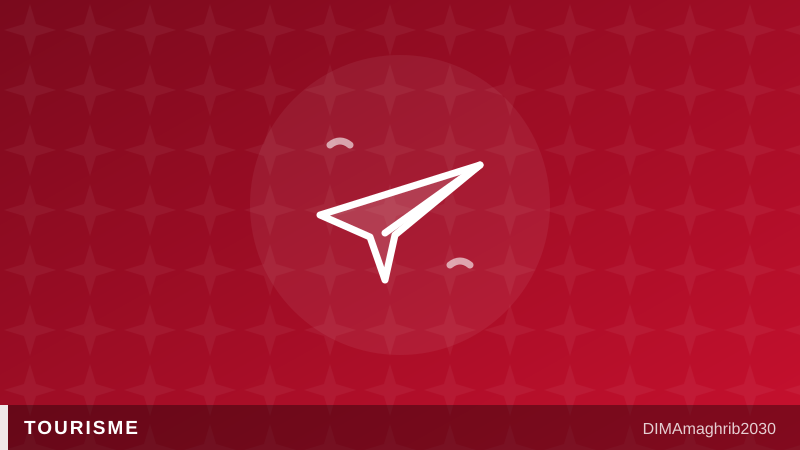

Tourisme au Maroc : 7,7 millions de visiteurs en 5 mois, un record historiqueMorocco Hits 7.7 Million Tourists in 5 Months — Inside the 2026 Travel Boom

Le Maroc vit l'un des meilleurs démarrages d'année de son histoire touristique. Entre janvier et mai 2026, le royaume a accueilli 7,7 millions de visiteurs internationaux, soit une hausse de 7% par rapport à la même période en 2025, selon Travel Daily News. Un chiffre qui confirme que le tourisme Maroc 2026 n'est pas un simple rebond post-crise, mais une trajectoire de croissance durable, portée par une offre aérienne renforcée et une image de destination sûre et accessible.
Le mois de mai à lui seul illustre l'accélération du mouvement : 1,7 million de visiteurs sont entrés au Maroc, soit une progression spectaculaire de 13% sur un an, rapporte Travel And Tour World. Ces chiffres tourisme Maroc placent le pays parmi les destinations les plus dynamiques du bassin méditerranéen et nord-africain pour cette période.
Pourquoi un tel boom ? La capacité aérienne explose
Derrière cette envolée des arrivées se cache une explication très concrète : les compagnies aériennes misent massivement sur le Maroc. Pour l'été 2026, la capacité aérienne Maroc contractée atteint environ 7,74 millions de sièges, en hausse de 13% par rapport à l'été précédent, selon les données de Travel And Tour World. Concrètement, cela signifie plus de vols directs depuis l'Europe, davantage de liaisons vers les aéroports régionaux, et une offre élargie pour les voyageurs qui cherchent la meilleure période pour visiter le Maroc été 2026.
Cette multiplication des vols Maroc été 2026 répond à une demande déjà forte, mais elle l'alimente aussi en retour : plus de sièges disponibles signifie généralement plus de flexibilité tarifaire en basse saison, mais aussi une pression accrue sur les prix pendant les pics de juillet-août, lorsque la demande dépasse encore l'offre sur certaines routes prisées comme Marrakech, Agadir ou Casablanca.
Des recettes qui grimpent plus vite que les arrivées
Autre signal fort : les recettes touristiques ont bondi d'environ 21% sur les cinq premiers mois de 2026, un rythme supérieur à celui des arrivées elles-mêmes, selon Travel And Tour World. Autrement dit, les visiteurs dépensent davantage par séjour — que ce soit en hébergement, restauration ou excursions — ce qui traduit une montée en gamme de l'offre touristique marocaine et une clientèle internationale prête à investir dans des expériences de qualité.
Ce dynamisme s'inscrit dans une ambition officielle claire : le plan gouvernemental "Light in Action" vise 17,5 millions de voyageurs étrangers à terme, selon ITB Travel Industry News. Un objectif qui repositionne le Maroc comme un hub touristique majeur entre l'Europe, l'Afrique et le Moyen-Orient.
Ce que cela change pour les voyageurs cet été
Pour les touristes qui planifient encore leur séjour, ces chiffres appellent à la vigilance : réserver tôt reste la meilleure stratégie, notamment pour les vols et hébergements dans les villes impériales et sur la côte atlantique. Les voyageurs flexibles auront intérêt à privilégier juin ou septembre, des mois où l'affluence reste forte mais les tarifs plus raisonnables qu'en plein cœur de l'été.
Si la tendance se maintient, 2026 pourrait bien marquer un tournant durable pour le secteur, entre records d'arrivées, investissement aérien massif et ambition d'un Maroc touristique toujours plus international.
Morocco is having one of its strongest tourism starts on record. Between January and May 2026, the country welcomed 7.7 million international visitors, up 7% year-on-year, according to Travel Daily News. It's a clear signal that Morocco tourism statistics 2026 reflect more than a post-pandemic rebound — they point to sustained, structural growth fueled by expanded flight capacity and the country's reputation as a safe, accessible destination.
May 2026 alone tells the story of an accelerating trend: 1.7 million visitors arrived that month, a striking 13% jump compared to May 2025, according to Travel And Tour World. These numbers place Morocco among the fastest-growing destinations in the Mediterranean and North African region this year, cementing its status among Morocco record tourist arrivals headlines worldwide.
Why the surge? Airlines are betting big on Morocco
Behind the arrivals boom lies a very concrete driver: airlines are dramatically scaling up service to the kingdom. For summer 2026, contracted air seat capacity Morocco routes are set to reach roughly 7.74 million seats, a 13% increase year-on-year, per Travel And Tour World data. In practice, that means more direct flights from Europe, expanded connections to regional airports, and significantly more options for travelers researching vols Maroc été 2026 and the best timing for their trip.
This wave of new routes both responds to and fuels existing demand. More available seats generally means more competitive pricing outside peak weeks, but it also signals tighter competition for seats — and higher prices — during the July-August rush, particularly on high-demand routes into Marrakech, Agadir, and Casablanca.
Revenue is growing even faster than arrivals
Another telling data point: travel receipts jumped roughly 21% over the first five months of 2026, outpacing the growth in visitor numbers themselves, according to Travel And Tour World. That gap suggests tourists are spending more per trip — on accommodation, dining, and excursions — a sign that Morocco's tourism offering is moving upmarket, with international visitors increasingly willing to pay for premium experiences.
This momentum aligns with an ambitious government target: the "Light in Action" plan aims to attract 17.5 million foreign travelers, according to ITB Travel Industry News. If achieved, it would firmly establish Morocco as a major tourism hub bridging Europe, Africa, and the Middle East.
What this means for your summer trip
For travelers still finalizing plans, the takeaway is simple: book early. Flights and accommodation in the imperial cities and along the Atlantic coast are filling up fast. Those with flexible schedules should consider June or September — months that still offer excellent weather and fewer crowds, but at noticeably better rates than the peak summer weeks.
If this trajectory holds, 2026 could mark a defining year for Moroccan tourism — a rare convergence of record arrivals, massive airline investment, and a national ambition to make Morocco one of the world's most sought-after destinations.